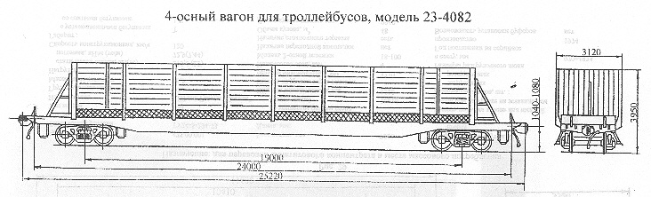

Назначение: для перевозки троллейбусов
Параметры
| Номер проекта | 4082.00.000 |
| Технические условия | |
| Модель вагона | 23-4082 |
| Тип вагона | |
| Изготовитель | АО "Днепровагонмаш" |
| Грузоподъемность, т | 62,8 |
| Масса тары вагона, т | 31,2 |
| Нагрузка: статическая осевая, кН(тс) |
230(23,5) |
| погонная, кН/м(тс/м) | 36,5(3,72) |
| Скорость конструкционная, км/ч | 120 |
| Габарит | 1-Т |
| База вагона, мм | 19000 |
| Длина, мм: по осям сцепления автосцепок |
25220 |
| по концевым балкам рамы (длина рамы) | 24000 |
| Высота от уровня верха головок рельсов максимальная, мм | 3950 |
| Ширина максимальная, мм: | 3120 |
| Количество осей, шт. | 4 |
| Модель 2-осной тележки | 18-100 |
| Наличие переходной площадки | есть |
| Наличие стояночного тормоза | есть |
| Ширина,мм: наружная(по раме) |
2700 |
| Ширина,мм: внутренняя(по стойкам) |
2920 |
| Количество троллейбусов,перевозимых в вагоне, шт. : ЮМЗТ1 |
1 |
| ЮМЗТ2 | 1 |
| Наличие дверного проема,мм | нет |
| Год постановки на серийное производство | 1993 |
| Возможность установки буферов | нет |